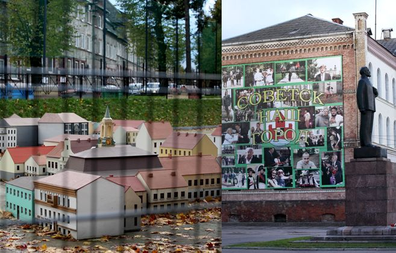
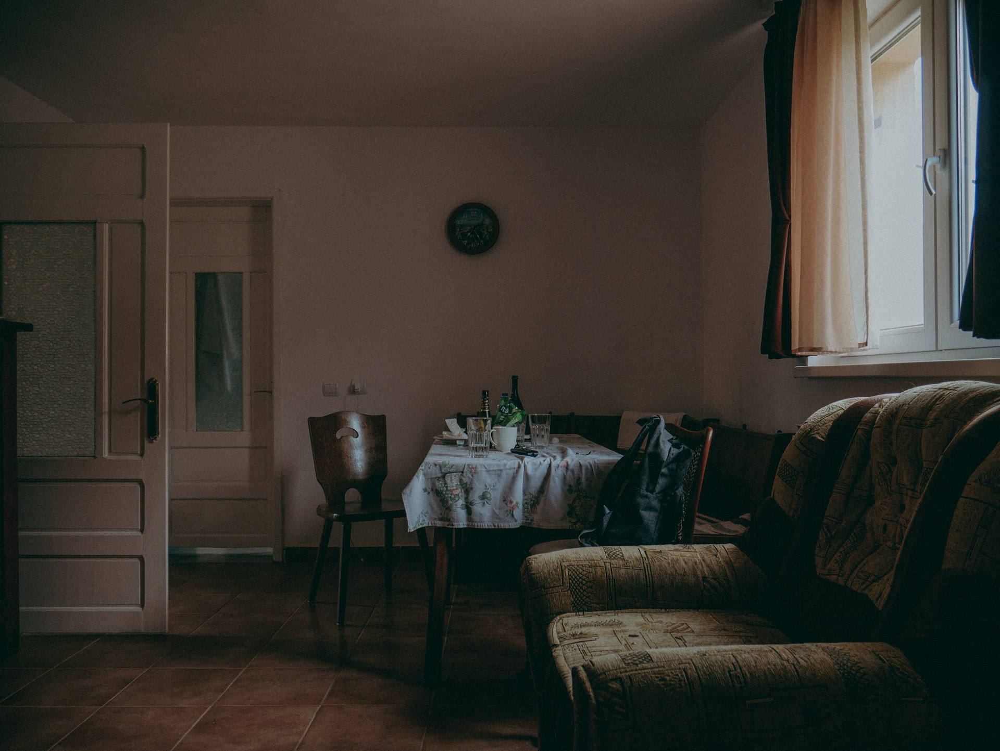

Miesto maketas prie įėjimo į karalienės Luizės parką. Miesto centras
Tilžė, Tilist, Советск (Sovetskas), 2016
CLOSE
Johansesas Bobrowskis
Pažinkime Mažaja Lietuva ir Vilkiskio krasta kaip J. Bobrowskio kurybos saltini
